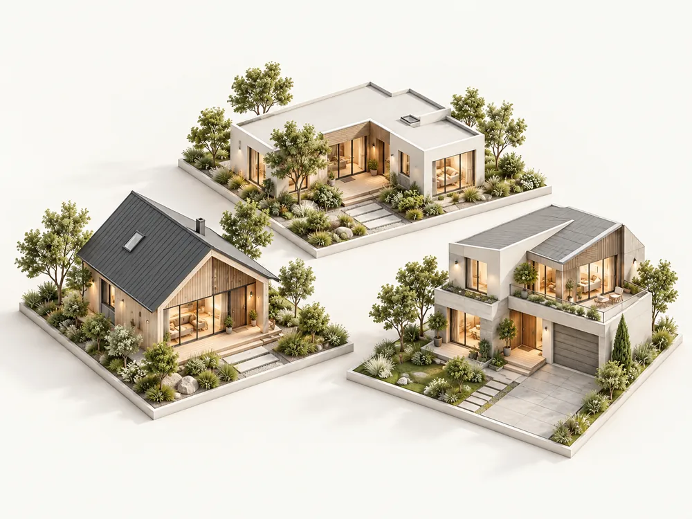
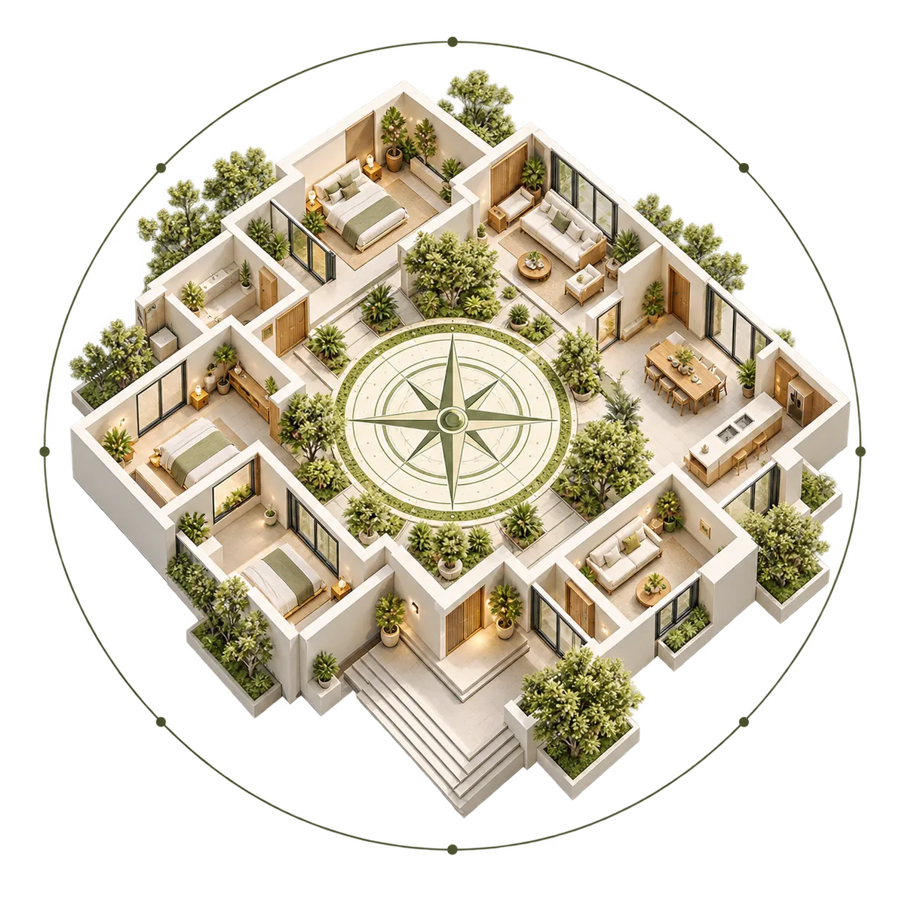
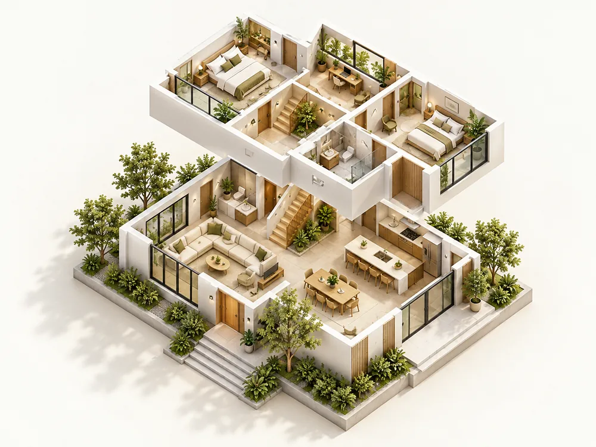

Property selection
Have the section, orientation and plans assessed before you commit. Contact Aanchal for current pricing and consultation details.
Explore property selectionVastu Shastra · New Zealand
Auckland-based Vastu guidance for homes that work in harmony with light, air, earth, water and space. Practical refinements for the home you already have, with minimal disruption.
Discover our approach
Inspired by Vastu. Designed for every home.
Our approach

Vastu Shastra is a design framework for creating balance between a home, its occupants and the natural forces around it. It considers the five elements — fire, water, earth, space and air — alongside sunlight, airflow, orientation and everyday life.
Vastu considers the five elements — fire, water, earth, space and air — alongside sunlight, airflow, orientation and the earth's magnetic field. Its principles offer a universal lens for understanding how a home feels and functions.
Recommendations are adapted to local light, seasons, climate and the way each home is built, so the result feels practical and natural for the people who live there.
Explore our approachWays we can help
Practical, personalised guidance at key stages of your property journey — from finding the right home to making the most of the one you’re in.

Have the section, orientation and plans assessed before you commit. Contact Aanchal for current pricing and consultation details.
Explore property selection
A floor-by-floor assessment of the elements, directions, room relationships and practical improvements that can bring greater balance to the home.
Explore home consultations
Plan-stage reviews, per-home assessments and certification for qualifying homes.
Explore builder partnershipsA place to begin
A quick way to reflect on what’s working, and where there might be opportunities for change.
Buying, building, settled or developing · tell Aanchal where you are. On-site across Auckland and online New Zealand-wide.